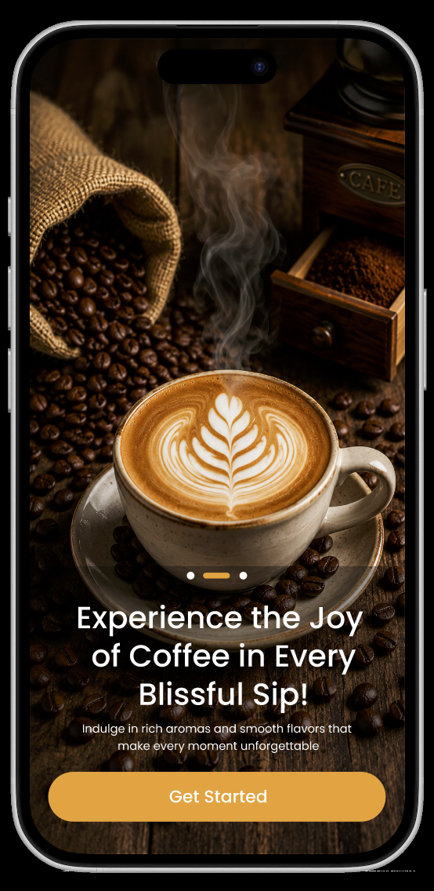
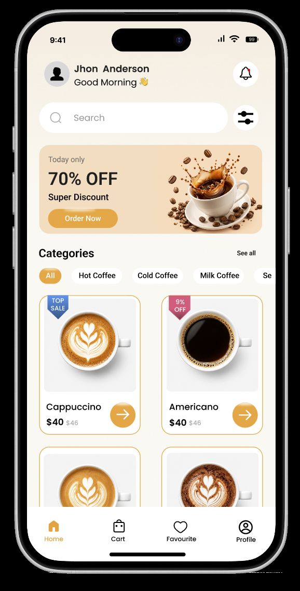
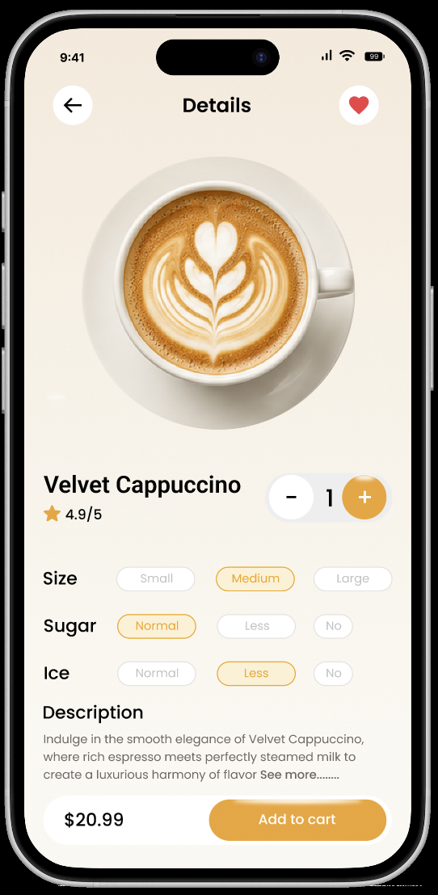
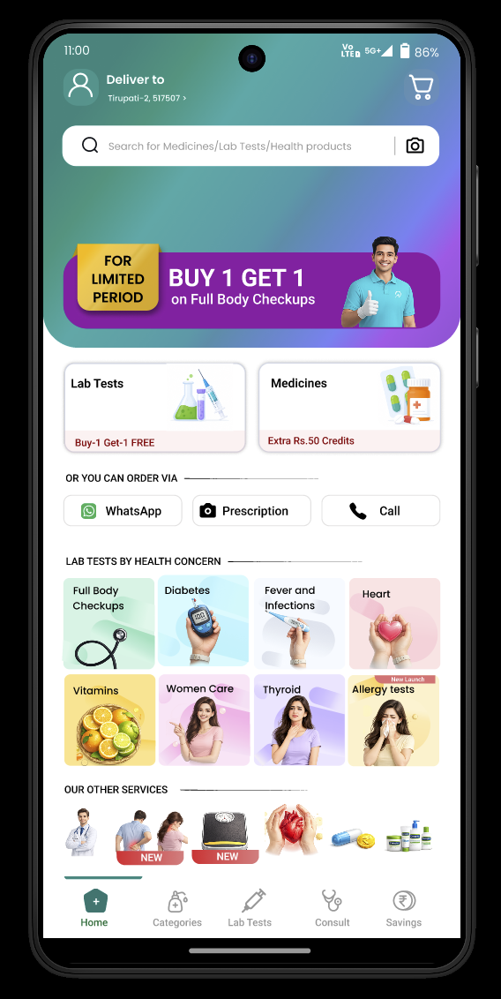
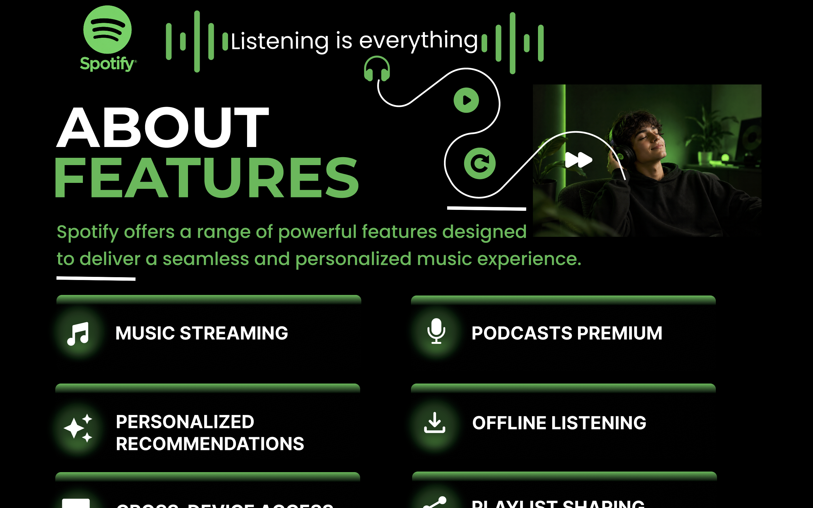
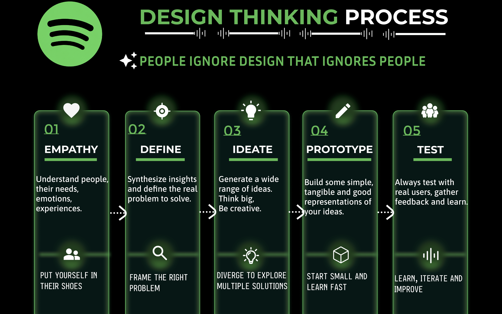
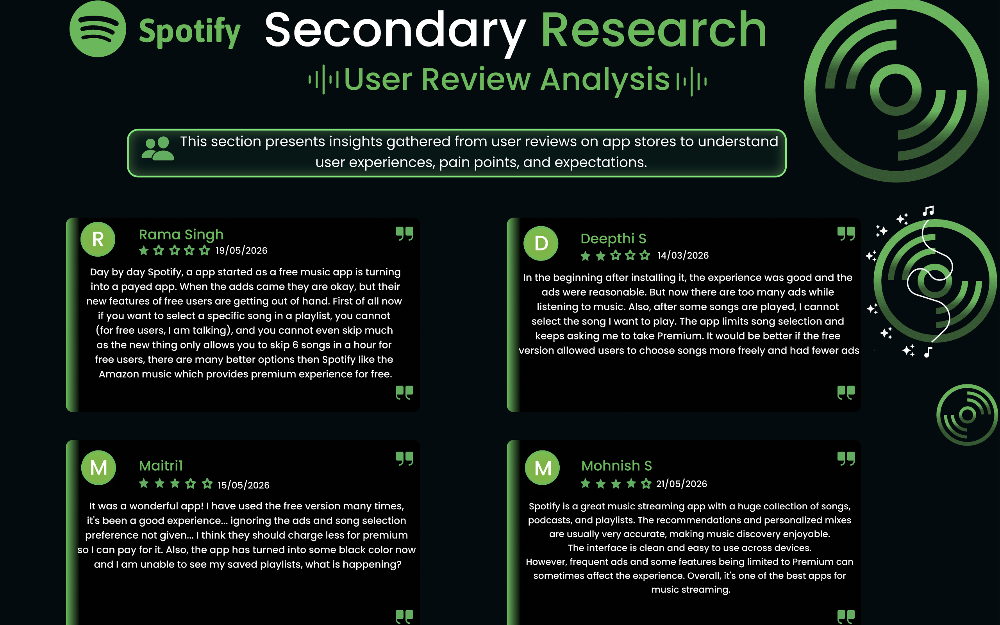

These projects represent my learning journey in
UI/UX design and user-centered design principles.
I enjoy creating intuitive, visually appealing,
and user-friendly interfaces using design tools
such as Figma.